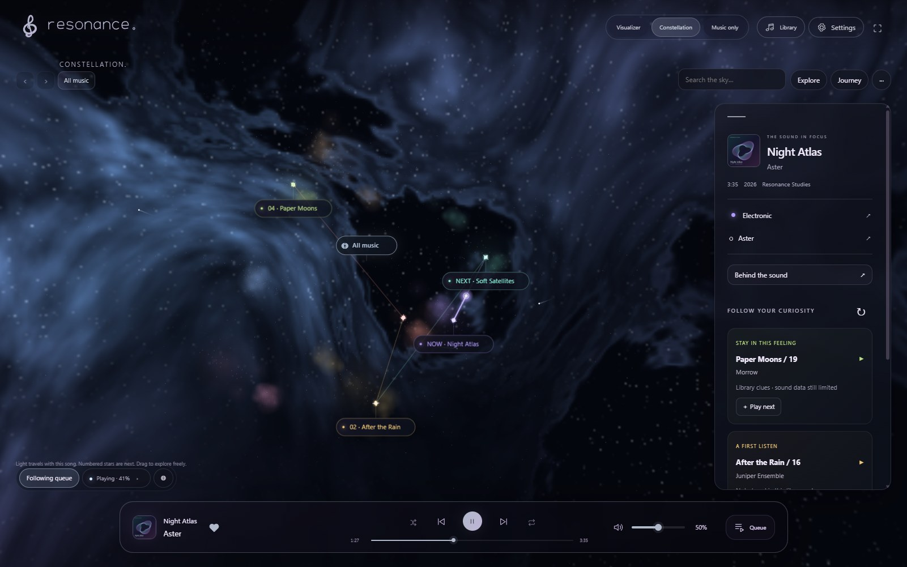
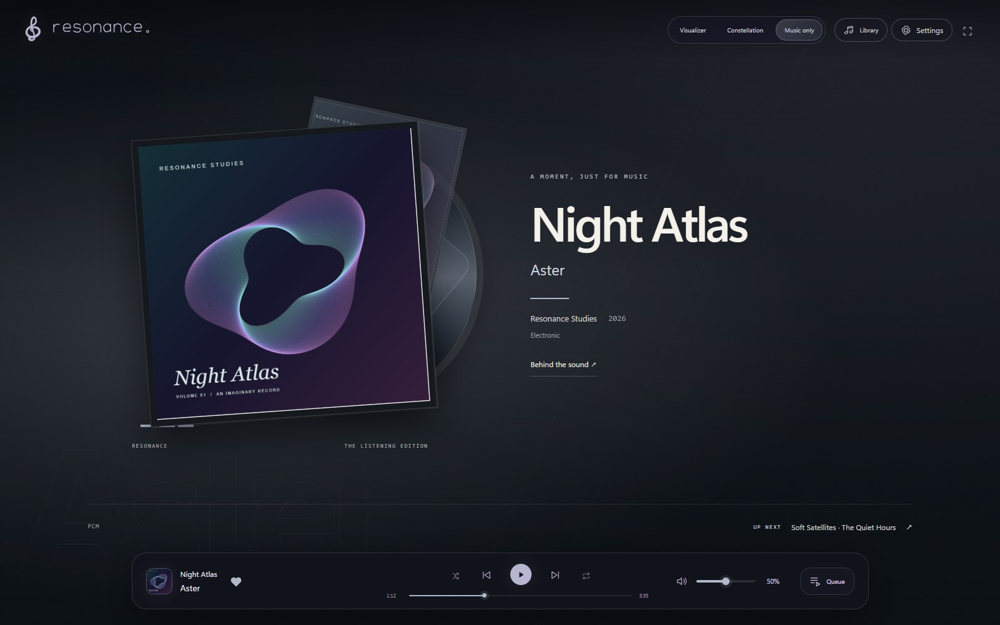
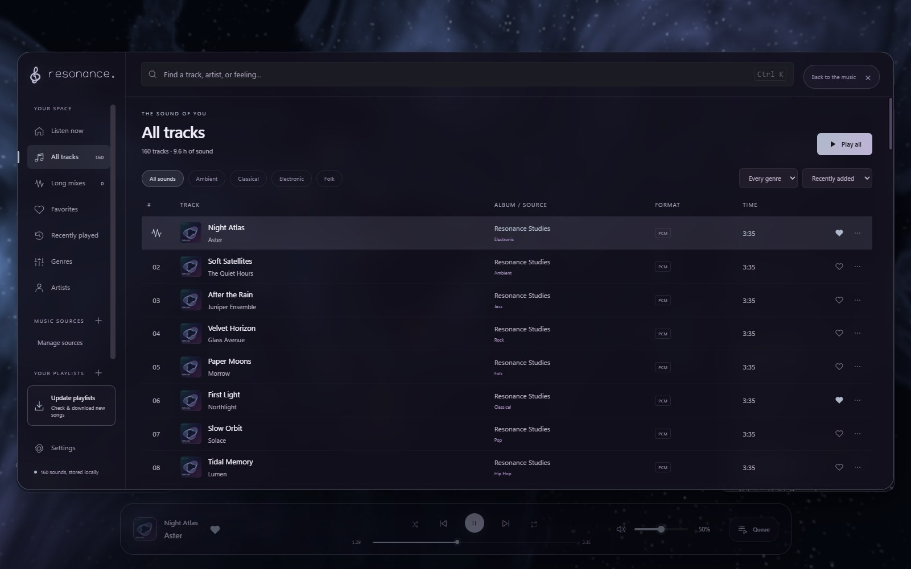

A closer listen
Make it your space.
Start with a folder and a favorite song. There’s more to explore when you’re ready: a living scene, a sky full of connections, and the details behind every recording.
01 / Getting started
A folder. A song. You’re in.
- Download the app. Windows: extract the entire ZIP and open
Resonance.exe. Android: open the ARM64 APK and follow the system installation steps; Android may ask you to allow installation from your browser. - Open Library and add a music folder. On Android, choose the folder through the system picker and grant access. An empty folder is a place for future downloads, not a collection of songs yet.
- Play a song, then choose your view. Visualizer, Constellation and Music only share the same player. You can switch without restarting the song.
Click or tap the playing song’s cover or title to open Behind the sound. That is where you’ll find lyrics, recording details and listening edits. Queue keeps the previous and upcoming songs within reach.
No music is bundled. Local files work offline; artwork searches, playlist downloads and update checks need an internet connection. There is no automatic library sync between devices.
02 / Visualizer
Watch the sound take shape.
The Visualizer combines a particle sculpture, flowing ribbons and an evolving background. It responds to rhythm, frequency energy and changes in a song. Cover artwork supplies a palette, so the atmosphere can change with the recording.
- Look around: drag with the left mouse button on PC, or swipe on mobile. Optional camera rails and audio-reactive zoom add movement.
- Make it yours: Visuals groups the controls into Style, Motion, Display and Extras. Tune intensity, bloom, motion and kaleidoscope patterns, or reset individual values.
- See frequency detail: a mirrored spectrum follows the ribbon. Its emissive particles brighten with sound; intensity and contrast have their own controls.
- Settle in: Immerse reduces interface clutter. Quality and frame-rate controls help balance detail, motion and device load.
Track Character uses saved sound profiles to shape the response over a recording. The visual system estimates musical roles from audio; it does not provide isolated instrument stems or identify every instrument.
03 / Constellation
Your collection, connected.
Each song is a star in a 3D map. Genre regions and artist connections help you see relationships in your own library. Select a star to play it, then use the details panel to follow its artist, genre or nearby discoveries.


Explore at your own pace
On PC, drag to orbit, right-drag to pan and scroll to zoom. On mobile, use touch gestures to navigate. Genre and artist markers take you closer; the All music marker returns to the overview. The breadcrumb trail and Back/Forward buttons keep your route through the map understandable.
Follow the queue, or make a journey
Follow queue frames the next songs and shows playback time as light travelling along the connection. Move the camera yourself to resume exploring. Find playing returns to the current song.
Journey builds a proposed route through available local songs. Choose a starting point, optional destination or pinned stops, an approximate duration and a direction. Review, reorder or replace songs before choosing Play now or Play after current. The latter replaces the upcoming queue without interrupting the current song. A journey can also be saved as a playlist.
Suggestions use available artist, genre and sound-profile clues. They are not a streaming recommendation service. Unknown genres stay unknown until researched or corrected; a small or poorly tagged library has fewer useful connections.
04 / Music only
The listening edition.


A still composition brings together the cover, its colors, the title and the artist. Four treatments respond to genre: graphic Prism, paper-like Editorial, bold Poster and softer Nocturne.
The main cover stays intact, including wide artwork. Album and year appear when available; Behind the sound and the next song remain a click away. Phone layouts make room for the player on smaller screens.
The animated visualizer and mascot stop rendering in this mode. It adds no continuous graphics loop or extra audio analysis. Windows can use cached supplementary artwork with source credits; Android uses local covers. The result depends on the artwork you have—it does not invent artist images or generate a unique painting for every song.
05 / Dynamic Lyrics
Read the moment you hear.
When a song has timed lyrics, the Lyrics button in Visualizer becomes available. Lines animate with playback, using palette-colored light, subdued unsung text and a dark shadow for readability.
- Word timestamps available: words fill from left to right using their actual timing.
- Line timestamps only: an approximate sweep follows the duration of the phrase, including wrapped lines. It is a visual guide, not word recognition.
- Plain text only: read the lyrics in Behind the sound; there is no reliable timing for the dynamic view.
If the source is early or late, use the song’s saved lyrics offset. Supported timed lyric files can also be imported or exported. Availability and timing depend on the recording and source; Resonance does not download speech models, transcribe songs or generate new timing with AI.
06 / Your library
Less sorting. More finding.
Browse tracks, long mixes, artists, genres, favorites and recent plays. Create playlists, search the collection, and open Behind the sound for a recording’s details.


Settings → Library & downloads → Library review brings uncertain metadata into one place. Artist credits, missing genres and possible duplicate recordings have separate review paths.
- Featured performers can belong to the same song without becoming a combined artist.
- Genre research distinguishes recording evidence from artist-level suggestions.
- Your saved corrections take priority over automatic suggestions. Undo is available.
- Possible copies and alternate versions are suggestions for review; they are not automatically merged or deleted.
Edits are saved in Resonance’s library and do not retag the original audio file. Ambiguous titles, repost channels and sparse catalogues can still need a human correction.
07 / Playback & sound
Make the next song feel at home.
Loudness leveling aims to bring whole songs toward a shared listening level, while preserving changes in loudness inside each recording. It uses local measurements; unreadable files may not be measurable, and peak protection can limit how far a quiet song is raised.
Silent-edge skipping trims measured silence at the beginning or end during playback. The timeline shows the skipped portions. Set manual start and end points for intros or outros in listening edits. Original files remain unchanged; automatic speech removal is not included.
EQ, volume controls and Bluetooth visual-sync adjustments let you fine-tune listening and animation alignment. Windows also offers an experimental crossfade between songs. Android retains its native player, notification controls and system-confirmed update flow.
08 / Playlist imports
Bring a list. Choose the recordings.
Add supported public YouTube, Spotify or Deezer playlists in Library & downloads. Resonance checks for new entries, shows what you already have and lets you review the selection before downloading.
Spotify and Deezer provide playlist information, not their audio. Imported titles, artists and order are matched to YouTube recordings. Review uncertain matches before downloading audio from the selected recording.
When a recording is genuinely unavailable, the app can look for another upload, including an official music video, and extract its audio. Availability is not guaranteed. Temporary provider limits are handled separately; a different upload is not a way around account restrictions.
For Deezer, use the full public playlist URL; private playlists and short sharing links are not supported. Downloaded files can be played offline. Use recordings you have permission to download.
09 / Live audio & Sona
A little company for your sound.
Windows desktop audio lets the Visualizer react to other applications. Enable the optional microphone input to include your own voice. This audio drives the scene; Resonance does not record or upload it.
Android audio capture uses the system consent screen and only receives audio from apps that allow capture. Its restrictions differ from Windows, and it does not offer the Windows microphone mix.
Sona is the default optional companion. Choose an appearance in the visual settings and let the character accompany the scene. On Windows, floating mode keeps the companion above other windows with compact playback controls. Music only and Constellation suspend the scene mascot.
10 / Updates & storage
Update the app. Keep your space.
Both platforms check GitHub Releases and show an update-ready indicator. On Windows, choose Restart & update when convenient. On Android, choose Install update and confirm through the system installer. Android’s automatic update downloads use unmetered Wi-Fi by default.
Keep the Windows data folder with the app. Install the Android APK over the existing version—don’t uninstall first. These flows preserve music, playlists and preferences. Each platform has its own version number.
Windows cleans obsolete completed files in its .updates directory after launch, retaining one latest rollback backup. Pending, active or failed updates are kept for safe recovery. Storage settings also offer cache cleanup without deleting songs.
If an update fails, check again for a newer release in App updates. A direct download from the download page remains the fallback. Don’t delete your data folder to fix an update.
11 / Platform differences
The same collection of ideas.
| Feature | Windows | Android |
|---|---|---|
| Distribution | 64-bit portable ZIP | Android 10+, ARM64 APK · preview |
| Listening views | Visualizer, Constellation, Music only | Same three modes, adapted for touch |
| Lyrics & library tools | Supported | Supported |
| Other-app audio | Desktop audio + optional microphone | System consent; capture-permitting apps |
| Floating companion | Always-on-top mode + controls | In-app companion |
| Crossfade | Experimental | Not available |
| Update installation | Restart when you choose | Android installer confirmation |
Graphics performance depends on the device, driver and settings. Android uses mobile performance defaults. Automated builds and browser previews are not physical-device validation; release notes state what was checked. iPhone and automatic device-to-device sync are not currently supported.
12 / Privacy & help
Your music stays yours.
- On your device: local playback, audio measurements, playlists, listening history, corrections and preferences.
- Online when used: lyrics, artwork and metadata lookups send song/artist search terms to providers. Playlist imports contact the selected service; downloads contact the recording source. Update checks and app downloads contact GitHub.
- Not uploaded by local analysis: your audio files. Desktop-audio and microphone capture are not recorded or uploaded by Resonance.
- This website: no analytics, third-party fonts or required JavaScript. Pages and downloads are hosted by GitHub, which receives normal web request information.
Found a problem? Open an issue on GitHub with the app version, platform, what happened and what you expected. Remove personal file paths, names and playlist links from screenshots or diagnostic text before sharing. Never attach your library database, cookies or credentials.
Want implementation details? Browse the technical documentation, release notes or source repository. Artwork and dependency notices are available in the app’s Credits.